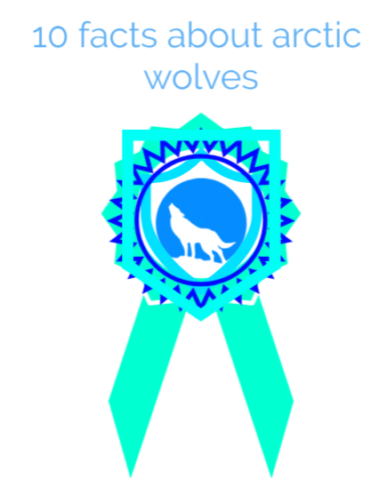

here are 5 facts about artic wolfs

Due to the scarce amount of prey in the Arctic
these wolves have territories that can extend 1,000 square miles or more,
much wider than wolves who live further south.
The biggest threats to these animals are Polar bears,
other wolves, and of course humans. Unlike other wolf species
the Arctic Wolf has never been seriously threatened by humans due to the fact
there are very few humans living in the arctic.
Alaska is where the majority of the wild Arctic Wolves live
they are able to walk on the frozen ground due to the way their
feet are designed that allows them to shift their weight around and to keep a good grip.
Not only can they stand the very cold temperatures,
they don’t seem to mind the part of the year when it is dark for both day and night.
Both Greenland and Canada have Arctic Wolves that are found in various
locations as well. However, the numbers of them in these areas are drastically low.
They have moved or they have perished due to a lack of food and habitat for
them to survive. Around Alaska the natural habitat for these wolves has been
untouchable due to the land being too cold for people to thrive in.